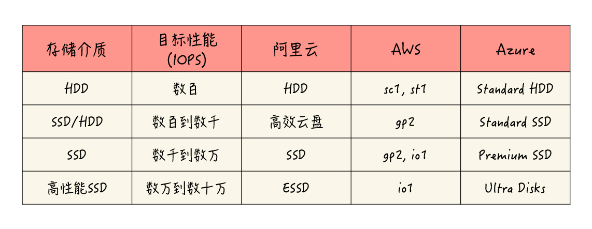

- 00 开篇词 云计算，这是开发者最好的时代.md.html
- 01 区域和可用区：欢迎来到云端数据中心.md.html
- 02 云虚拟机（一）：云端“攒机”，有哪些容易忽视的要点？.md.html
- 03 云虚拟机（二）：眼花缭乱的虚拟机型号，我该如何选择？.md.html
- 04 云虚拟机（三）：老板要求省省省，有哪些妙招？.md.html
- 05 云硬盘：云上IO到底给不给力？.md.html
- 06 云上虚拟网络：开合有度，编织无形之网.md.html
- 07 云端架构最佳实践：与故障同舞，与伸缩共生.md.html
- 08 云上运维：云端究竟需不需要运维？需要怎样的运维？.md.html
- 09 什么是PaaS？怎样深入理解和评估PaaS？.md.html
- 10 对象存储：看似简单的存储服务都有哪些玄机？.md.html
- 11 应用托管服务：Web应用怎样在云上安家？.md.html
- 12 云数据库：高歌猛进的数据库“新贵”.md.html
- 13 云上大数据：云计算遇上大数据，为什么堪称天作之合？.md.html
- 14 云上容器服务：从Docker到Kubernetes，迎接云原生浪潮.md.html
- 15 无服务器计算：追求极致效率的多面手.md.html
- 16 云上AI服务：云AI能从哪些方面帮助构建智能应用？.md.html
- 结束语 与云计算一起，迈向未来.md.html
- 捐赠
05 云硬盘：云上IO到底给不给力？
你好，我是何恺铎。
通过前几讲的学习，我想你对云虚拟机应该有了不少的了解，也对如何根据实际情况来选择和运用虚拟机，有了一定的认识。在前面的学习过程中，我也留下了许多伏笔。其中之一，就是云虚拟机的重要组件：云硬盘。
那么今天这一讲，我们就来深入讨论一下这个话题，来帮助你了解不同云硬盘的差别，以及如何在实际场景中挑选最合适你的硬盘型号。
云硬盘是什么？
云硬盘，又叫做“云盘”或者“云磁盘”，就是云虚拟机上可以挂载和使用的硬盘。这里，它既包含了用于承载操作系统的系统盘，也包括了承载数据的数据盘。
在云计算的领域，有时，我们还会把云端磁盘服务叫做块存储（Block Storage），因为它们与Linux操作系统中的块设备相对应，是云上提供的“裸盘”，可以格式化并且施加文件系统。
既然是硬盘，那么它就与我们通常的认知相一致，当然是带有数据持久化功能的。这在专业上被称为“非易失性存储”（Non-ephemeral Storage），也就是说写入的数据不会丢失。即便所在虚拟机重启、关机甚至下线删除，这块云硬盘只要还存在，其中的数据也并不会被擦除。
事实上，云厂商对于云盘，不仅仅会保障数据的顺利写入，一般还会帮你在存储端同步和保留至少三份副本的数据。所以说，云硬盘的冗余度和可用性是非常之高的，一般极少发生云硬盘数据丢失的情况，你大可放心地使用。
重要提示：尽管云硬盘有良好的存储冗余，但你不能仅仅依赖它的可靠性。从数据的层面来看，你必须进行额外的备份。2018年7月曾有创业公司因为云厂商故障，丢失了在云硬盘上的所有重要数据，一时成为业界的热点新闻，这个教训是非常深刻的。所以，你应当通过定期为云磁盘创建快照、异地备份数据文件等方式，来保护你的关键数据。
云硬盘与传统磁盘的真正差异在于，绝大多数的云硬盘都是远程的。我们都知道，在经典计算机的体系结构中，硬盘是通过本地机器内部主板的高速总线，与CPU、内存等部件相连接；而在云端，你的硬盘则很可能并不在宿主机上，而是在专用的磁盘服务器阵列中，两者是通过数据中心内部的特有IO线路进行连接。没错，这也正是计算存储分离架构的一种体现。
理解了这样的一个结构，你就能明白，有些云上的“IO优化实例”（AWS上称为EBS-Optimized）是指什么了。它就是指云虚拟机与云硬盘之间的网络传输，进行了软硬件层面的优化，这样可以充分地发挥所挂载磁盘的性能。现在较新型号、较强性能的云虚拟机，一般都自动启用了这个优化。
云硬盘的性能等级
你可能听说过一些，网上对于云硬盘性能方面的质疑。这在云计算发展的早期尤其多见，甚至成为了很多人反对上云的主要原因之一。
不错，云硬盘的确有多副本写入的开销，同时也比较依赖于远程传输。所以，早期云硬盘的确存在一些性能上的短板。不过，那都是老黄历了。
当下的云硬盘经过了多次的软硬件迭代，尤其是SSD的迅速发展，吞吐量和随机读写能力等各项性能指标都已经不再是问题了。在现代云计算中，已经发展出了基于不同存储介质的、丰富的性能等级选择，你已经能够找到单盘IOPS在数十万量级甚至达到百万的云硬盘产品了。
所以，现在的云硬盘，性能上已经非常“给力”了。你更多的是要考虑如何根据应用场景，选择合适介质的硬盘等级，同时权衡好相应的成本。
那么下面，我们就分别来看一看主流云硬盘的不同性能等级，以及它们对应的磁盘类型和存储介质。
第一个等级的云硬盘，是基于传统HDD硬盘构建而成的。这类云盘的性能一般，最高IOPS大概在数百左右。在很多的云上，已经不把它作为推荐的选择了。但它并非一无是处，成本低就是它的最大优势，在不注重性能的测试环境，或者是个人自用的服务器，它就是一个很好的选择。
第二个等级，往往是基于混合硬盘，也就是结合HDD和SSD硬盘构建的云硬盘。它会综合发挥SSD的性能优势和HDD的容量优势。比如它可以用SSD部分来承载热点区域数据，或是作为缓存，来提高响应性能。在这个等级下，典型的IOPS为数千左右，是很多云上创建硬盘的默认选项，比较适合像是操作系统启动盘这样的常规负载。
第三个等级的云硬盘，它的存储介质就是纯SSD硬盘了。虽然贵一些，但一分价钱一分货，这个等级下的云硬盘能够提供非常稳定的IO能力，IOPS通常能够上万，也有相当不俗的吞吐量和较低的访问延时。你可以用它来承载生产环境中重要的关键业务应用，或是各类数据库等IO密集型应用。
第四个等级，也是当下业界的最高等级，就是进一步优化增强的最新SSD云盘。它一般会采用更新一代的企业级闪存硬件，配合自研或改进后的底层传输协议，和虚拟化技术栈的优化来提供服务。因此它能够达到惊人的性能水平，满足我们最为苛刻的性能场景需求，比如承载SAP HANA（SAP的高性能计算平台）、高并发OLTP数据库等等。这类SSD云盘的IOPS通常能够突破十万以上。
各个云对于不同等级云硬盘的命名方法各有不同，我把相应的产品类型和名称整理成了一个表格，方便你去了解和查询：

当然，这个表格只是一个大致的划分，仅供你作为参考。在具体的情况中，云和云必然存在一些差异，也会有一些各自的产品特点，建议你在使用时针对性地确认。比如说，AWS的gp2通用型SSD类型，它具有比较宽广的性能指标范围，还具备I/O积分和性能突增机制（与性能突增VM实例的CPU类似），可以提供比较高的峰值性能，应用场景是相当广泛的。
除了云盘性能等级之外，还有一个影响云盘性能的重要因素，就是这块云硬盘的容量。不论是哪种磁盘类型，它的容量大小几乎都与性能正向相关。同等的性能等级下，云硬盘的容量越大，一般来说它的性能就越高，直到达到这个等级的上限。这是由云上磁盘能力共享的底层设计所决定的。
所以在某些时候，你可能需要刻意地增大所申请的云硬盘的容量，以获取更高的性能，即便这些额外的空间不一定能被用上。
好了，对于云盘性能的讨论就先到这里。在上面的性能讨论当中，我们主要通过IOPS来进行衡量。事实上，衡量IO性能还有吞吐量、访问延时等其他的重要指标。这些指标同样会由磁盘的类型和大小所决定，你可以查询云厂商文档来确认。这里限于篇幅，我就不详细展开了。
云硬盘实战
接下来，让我们进入实战环节，一起学习一下云硬盘的使用。在这个过程中，你也能真实地感受一下不同性能等级的区别。
这里，可以继续沿用我们在第2讲中创建的阿里云虚拟机，目前它是默认挂载了一个40G的高效云盘作为系统盘。
我们可以先用lsblk和df命令查看一下磁盘的情况：
[root@my-ecs-vm1 ~]# lsblk
NAME MAJ:MIN RM SIZE RO TYPE MOUNTPOINT
vda 253:0 0 40G 0 disk
└─vda1 253:1 0 40G 0 part /
[root@my-ecs-vm1 ~]# df -hT -x tmpfs -x devtmpfs
Filesystem Type Size Used Avail Use% Mounted on
/dev/vda1 ext4 40G 1.6G 36G 5% /
通过命令的输出，可以清晰地看到，这台机器有一块40G的系统盘，挂载在根目录下。
然后，我们可以使用fio工具来测试一下这块系统盘的性能表现。我们通过fio在系统盘上创建一个1GB的文件，接着进行4K大小的随机读取实验。
[root@my-ecs-vm1 ~]# fio --name=mytest1 --filename=~/testfile1 --rw=randread --refill_buffers --bs=4k --size=1G -runtime=10 -direct=1 -iodepth=128 -ioengine=libaio
mytest1: (g=0): rw=randread, bs=(R) 4096B-4096B, (W) 4096B-4096B, (T) 4096B-4096B, ioengine=l
ibaio, iodepth=128
fio-3.7
Starting 1 process
mytest1: Laying out IO file (1 file / 1024MiB)
Jobs: 1 (f=1): [r(1)][100.0%][r=8560KiB/s,w=0KiB/s][r=2140,w=0 IOPS][eta 00m:00s]
mytest1: (groupid=0, jobs=1): err= 0: pid=1324: Sat Jan 25 17:03:53 2020
read: IOPS=2154, BW=8619KiB/s (8826kB/s)(84.9MiB/10090msec)
slat (nsec): min=2529, max=38138, avg=3080.22, stdev=575.39
clat (usec): min=444, max=102701, avg=59394.84, stdev=46276.36
lat (usec): min=448, max=102705, avg=59398.39, stdev=46276.34
clat percentiles (msec):
| 1.00th=[ 3], 5.00th=[ 3], 10.00th=[ 4], 20.00th=[ 4],
| 30.00th=[ 4], 40.00th=[ 5], 50.00th=[ 96], 60.00th=[ 97],
| 70.00th=[ 99], 80.00th=[ 99], 90.00th=[ 100], 95.00th=[ 100],
| 99.00th=[ 101], 99.50th=[ 102], 99.90th=[ 102], 99.95th=[ 102],
| 99.99th=[ 103]
bw ( KiB/s): min= 8552, max=10280, per=100.00%, avg=8645.20, stdev=384.80, samples=20
iops : min= 2138, max= 2570, avg=2161.30, stdev=96.20, samples=20
lat (usec) : 500=0.01%, 1000=0.03%
lat (msec) : 2=0.50%, 4=36.26%, 10=3.74%, 100=57.13%, 250=2.34%
cpu : usr=0.50%, sys=1.19%, ctx=20986, majf=0, minf=161
IO depths : 1=0.1%, 2=0.1%, 4=0.1%, 8=0.1%, 16=0.1%, 32=0.1%, >=64=99.7%
submit : 0=0.0%, 4=100.0%, 8=0.0%, 16=0.0%, 32=0.0%, 64=0.0%, >=64=0.0%
complete : 0=0.0%, 4=100.0%, 8=0.0%, 16=0.0%, 32=0.0%, 64=0.0%, >=64=0.1%
issued rwts: total=21741,0,0,0 short=0,0,0,0 dropped=0,0,0,0
latency : target=0, window=0, percentile=100.00%, depth=128
Run status group 0 (all jobs):
READ: bw=8619KiB/s (8826kB/s), 8619KiB/s-8619KiB/s (8826kB/s-8826kB/s), io=84.9MiB (89.1MB
), run=10090-10090msec
Disk stats (read/write):
vda: ios=21399/2, merge=0/1, ticks=1266052/242, in_queue=1039418, util=81.1
实际命令输出的结果比较长，这里我们主要关注下IOPS的部分。你可以看到，平均IOPS的数值都在2100左右，这个跑分的成绩，和我们当初建立这块高效云盘时提示的性能目标值“2120”相当一致。
如果高效云盘还不够满足你的业务要求，你可以随时为机器添加更高规格的硬盘，这也是云硬盘的灵活性所在。
接下来，我们就来试一下动态挂载新硬盘的过程。
首先来到这个虚拟机的“本实例磁盘”管理界面，选择“创建云盘”，这里我们选择一块300G的SSD云盘，按照提示，这样我们就能够拥有1万的IOPS。
之后，按照提示确认创建即可。OK，阿里云很快地为我们创建好了磁盘，但此时这块SSD磁盘的状态为“未挂载”，我们可以通过界面操作，把它挂载到正在运行中的目标虚拟机里。
挂载完成后，磁盘的状态开始变为“使用中”，说明磁盘已经“上线”。这时，我们再在Linux操作系统中用lsblk命令查看：
[root@my-ecs-vm1 ~]# lsblk
NAME MAJ:MIN RM SIZE RO TYPE MOUNTPOINT
vda 253:0 0 40G 0 disk
└─vda1 253:1 0 40G 0 part /
vdb 253:16 0 300G 0 disk
你可以看到，磁盘中已经出现了一个新的块设备vdb。
这时，我们需要将这块磁盘进行格式化，并创建ext4文件系统：
[root@my-ecs-vm1 ~]# mkfs.ext4 /dev/vdb
mke2fs 1.42.9 (28-Dec-2013)
Filesystem label=
OS type: Linux
Block size=4096 (log=2)
Fragment size=4096 (log=2)
Stride=0 blocks, Stripe width=0 blocks
19660800 inodes, 78643200 blocks
3932160 blocks (5.00%) reserved for the super user
First data block=0
Maximum filesystem blocks=2227175424
2400 block groups
32768 blocks per group, 32768 fragments per group
8192 inodes per group
Superblock backups stored on blocks:
32768, 98304, 163840, 229376, 294912, 819200, 884736, 1605632, 2654208,
4096000, 7962624, 11239424, 20480000, 23887872, 71663616
Allocating group tables: done
Writing inode tables: done
Creating journal (32768 blocks): done
Writing superblocks and filesystem accounting information: done
好，还差最后一步，我们要在/mnt下，创建一个data目录，并将这个新的块设备挂载到该目录。
[root@my-ecs-vm1 ~]# mkdir /mnt/data
[root@my-ecs-vm1 ~]# mount /dev/vdb /mnt/data/
终于大功告成。我们再次使用fio工具，来测试下这块SSD盘4K随机读方面的能力。和前面不同的是，这回我们要把测试文件路径定位到“/mnt/data”目录，因为这个目录指向的是刚刚创建的新硬盘：
[root@my-ecs-vm1 ~]# fio --name=mytest2 --filename=/mnt/data/testfile2 --rw=randread --refill_buffers --bs=4k --size=1G -runtime=10 -direct=1 -iodepth=128 -ioengine=libaio
mytest2: (g=0): rw=randread, bs=(R) 4096B-4096B, (W) 4096B-4096B, (T) 4096B-4096B, ioengine=l
ibaio, iodepth=128
fio-3.7
Starting 1 process
Jobs: 1 (f=1): [r(1)][100.0%][r=41.1MiB/s,w=0KiB/s][r=10.5k,w=0 IOPS][eta 00m:00s]
mytest2: (groupid=0, jobs=1): err= 0: pid=1302: Sat Jan 25 16:59:30 2020
read: IOPS=10.6k, BW=41.2MiB/s (43.2MB/s)(415MiB/10067msec)
slat (usec): min=2, max=445, avg= 3.10, stdev= 1.49
clat (usec): min=828, max=77219, avg=12115.14, stdev=20941.23
lat (usec): min=841, max=77222, avg=12118.74, stdev=20941.22
clat percentiles (usec):
| 1.00th=[ 2737], 5.00th=[ 3326], 10.00th=[ 3523], 20.00th=[ 3687],
| 30.00th=[ 3785], 40.00th=[ 3884], 50.00th=[ 3949], 60.00th=[ 4047],
| 70.00th=[ 4146], 80.00th=[ 4359], 90.00th=[56361], 95.00th=[71828],
| 99.00th=[73925], 99.50th=[73925], 99.90th=[74974], 99.95th=[76022],
| 99.99th=[76022]
bw ( KiB/s): min=41916, max=43600, per=100.00%, avg=42464.60, stdev=724.17, samples=20
iops : min=10479, max=10900, avg=10616.15, stdev=181.04, samples=20
lat (usec) : 1000=0.02%
lat (msec) : 2=0.17%, 4=55.50%, 10=29.30%, 20=0.83%, 50=3.47%
lat (msec) : 100=10.71%
cpu : usr=3.24%, sys=5.58%, ctx=96090, majf=0, minf=163
IO depths : 1=0.1%, 2=0.1%, 4=0.1%, 8=0.1%, 16=0.1%, 32=0.1%, >=64=99.9%
submit : 0=0.0%, 4=100.0%, 8=0.0%, 16=0.0%, 32=0.0%, 64=0.0%, >=64=0.0%
complete : 0=0.0%, 4=100.0%, 8=0.0%, 16=0.0%, 32=0.0%, 64=0.0%, >=64=0.1%
issued rwts: total=106300,0,0,0 short=0,0,0,0 dropped=0,0,0,0
latency : target=0, window=0, percentile=100.00%, depth=128
Run status group 0 (all jobs):
READ: bw=41.2MiB/s (43.2MB/s), 41.2MiB/s-41.2MiB/s (43.2MB/s-43.2MB/s), io=415MiB (435MB),
run=10067-10067msec
Disk stats (read/write):
vdb: ios=105123/3, merge=0/1, ticks=1265938/41, in_queue=1266532, util
上面的测试结果表明，这块SSD盘对/mnt/data目录中文件的4K随机读，成功地达到了1万IOPS的标称水准。也就是说，新创建的SSD磁盘性能还是相当给力的。
在实际的使用场景中，你就可以把一些读写较为密集的负载，比如数据库的数据目录，配置到这个SSD盘对应的目录下。
好了，通过上面的实验，相信你对云盘的挂载和使用有了比较直观的认识。云盘的热挂载特性让它使用起来特别灵活方便，而且大小性能任你调度。挂载后的云硬盘真正使用起来，和你熟悉的硬盘操作也并没有什么两样。
认识和使用本地磁盘
前面我们对于云虚拟机的硬盘作了许多讨论，都是围绕着“远程硬盘”这个产品形态来展开的。的确，远程云硬盘的好处很多，是计算存储分离架构的体现，也是云虚拟机硬盘的主流方式。
不过，有时我们还是会有点怀念“本地磁盘”，也就是直接位于宿主机上的硬盘。因为看似传统的本地硬盘，与远程硬盘相比起来，还是会有它自己的优点。毕竟它和计算单元离得近，而且没有三副本的负担，所以往往性能不俗，价格又相对便宜。
那么，云上能否使用本地磁盘呢？
答案是肯定的。而且本地磁盘一般不需要自行创建，只要你选择了带有本地磁盘的机型，启动后，该型号对应大小和规格的本地磁盘就会自动被挂载。
你应该还记得，我在介绍虚拟机型号的第3讲中，提到了“本地存储”系列的虚拟机吧？那些正是自带有大容量、高性能本地磁盘的虚拟机型号。它们或是配备了高性能的本地NVMe SSD磁盘，或是装备有高吞吐的先进HDD，数量可能还不止一块。妥善使用这些本地磁盘，在合适的场景下，能够帮你发挥很大的作用。
比如，你要在云上用虚拟机自己搭建一个经典的Hadoop集群，要用虚拟机的磁盘组合成HDFS（Hadoop的分布式文件系统），并希望使用MapReduce或Spark等支持数据本地性（Data Locality）的计算框架。这时，你就应该考虑使用带有本地磁盘的机型了。
所以，当一些应用软件系统本身考虑到了硬件的不可靠性，设计了上层的存储冗余机制时，你就可以考虑采用本地磁盘。因为这种情况下，本地磁盘的可靠性缺陷得到了弥补，它的相对高性能和低成本就成为了优势。这时如果选用三副本的远程云硬盘，反倒显得有些笨重了。
还有一类，对数据丢失不敏感的临时性存储的场景，也是本地磁盘可以发挥的舞台。这些场景包括操作系统的pagefile或swap分区，以及数据库的硬盘缓存区（如SQL Server的Buffer Pool Extension）等等。
不过，我还是要提醒你本地磁盘的缺点，它在本质上，还是易失性（Ephemeral）的存储，当机器关机或删除，以及出现硬件故障时，本地磁盘上的数据就可能损坏或丢失。这一点我们必须牢记，不适用的场合必须使用更可靠的远程云硬盘。
课堂总结与思考
今天我们围绕云硬盘，进行了一系列的讲解，可以简单总结如下：
- 云硬盘是云虚拟机的主要持久化存储，与宿主机往往是分离的；
- 云硬盘支持动态添加和删除，使用起来灵活方便；
- 云硬盘一般提供多种性能等级，最终性能会受存储介质和容量大小的共同影响；
- 部分虚拟机型号会自带高性能的本地磁盘，在可以容忍数据丢失风险时，是你值得考虑的一个选择。
最后，我还想补充一点，云硬盘的付费模式，同样有按量付费和包年包月之分。在很多的云上，你能够为一块云盘启用包年，长期租用的确定性也能够给你带来折扣，这和虚拟机资源的包年包月是一样的。
今天，我想和你讨论的问题如下：
- 我们说云硬盘可以动态地挂载和卸载，使用起来十分方便。那么更进一步的问题是，已经挂载的云硬盘能够支持在线扩容吗？
- 还有一种云端常见的存储类产品，如阿里云的文件存储NAS、AWS的EFS等，也可以挂载到云虚拟机。那么，你知道这种产品形态和云硬盘有什么区别，主要用于什么场景吗？
你可以在留言区和我互动。如果觉得有收获，也欢迎你把这篇文章分享给你的朋友。感谢阅读，我们下期再见。
© 2019 - 2023 Liangliang Lee. Powered by gin and hexo-theme-book.